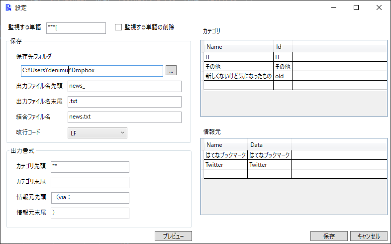

設定ウィンドウ
設定ウィンドウ
タスクトレイのメニューから「設定」を選択すると以下のウィンドウが表示されます。

各設定項目の意味は以下の通りです。
-
監視する単語
クリップボードに入っている文字列がここで設定した値で始まる場合にコメント入力ウィンドウが開きます。 -
監視する単語の削除
ここにチェックを入れると監視する単語を削除します。 -
保存先フォルダ
ファイルを保存するフォルダを指定します。右のボタンでフォルダ選択ダイアログを表示します。 -
出力ファイル名先頭・末尾
出力するファイル名の先頭・末尾を指定します。カテゴリを使用する場合、間にカテゴリがファイル名に使用されます。 -
結合ファイル名
カテゴリ毎に分かれたファイルを結合する際のファイル名です。 -
改行コード
出力するファイルの改行コードです。CRLF（Windows標準）、LF（Linux標準）、CR（古いMacの標準）から選択します。 出力されたテキストにiPhone、Androidからもアクセスする場合にはLFを推奨します。 -
カテゴリ先頭・末尾
カテゴリを使用する場合のファイル結合時に、カテゴリ毎の見出しの先頭・末尾を指定します。 カテゴリを使用しない場合は設定不要です。 -
情報元先頭・末尾
情報元の先頭・末尾を指定します。 -
カテゴリ
ニュースをカテゴリ毎に分類したい場合に使用します。 Nameはカテゴリ選択時の表示と出力するファイルに使用されます。Idは出力ファイル名に使用されます。 必ずセットで指定してください。また、Idは重複しないように設定してください。 -
情報元
情報元を入力する際にここで設定した内容を使用することが出来ます。 Nameは情報元選択時の表示に使用されます。Dataはファイルに出力する際に使用されます。